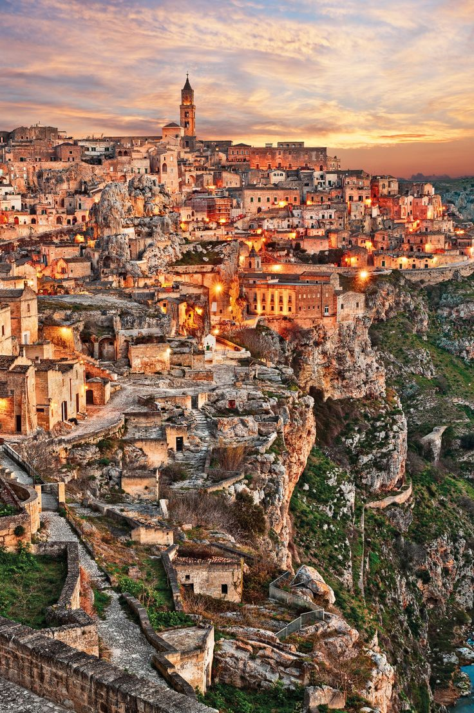

Polignano a mare, Alberobello, Matera, Naples, Pompeii, Amalfi, Positano, Sorrento
Poligniano a mare is a town and comune in the Metropolitan City of Bari, Apulia, southern Italy, located on the Adriatic Sea.
Alberobellois a small town and comune of the Metropolitan City of Bari, Apulia, southern Italy.
It has 10,237 inhabitants (2022) and is famous for its unique trullo buildings.
The trulli of Alberobello have been designated as a UNESCO World Heritage site since 1996.
Materais a city in the region of Basilicata, in Southern Italy.
Naplesis the regional capital of Campania and the third-largest city of Italy, after Rome and Milan.
Pompeii, along with Herculaneum and many villas in the surrounding area, was buried under
4 to 6 m of volcanic ash and pumice in the Eruption of Mount Vesuvius in 79 AD.
Positanois a village and comune on the Amalfi Coast, in Campania, Italy,
mainly in an enclave in the hills leading down to the coast.
Sorrentois a town overlooking the Bay of Naples in Southern Italy.